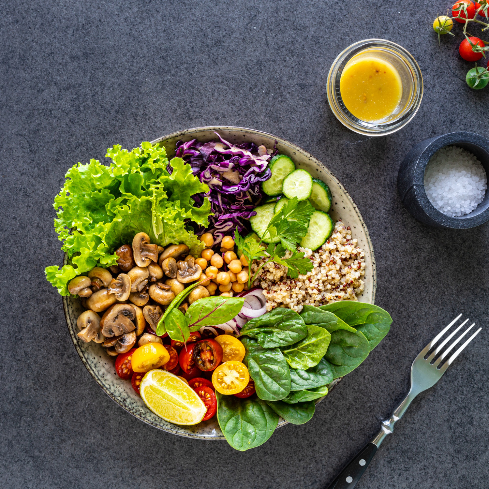

Quinoa Salat
25 Min.
Zutaten
Für
Portionen
g
Quinoa
ml
Gemüsebrühe
Dose(n) Mais
Gurke(n)
g
Zwiebeln
kleine Paprika
g
Feta Käse
Für das Dressing:
g
Jogurt
25 EL
Senf
25 EL
Olivenöl
EL
Balsamico Essig
Zubereitung
Vorbereitung ca. 10 Min.
Ruhezeit ca.30 Min.
Gesamtzeit ca.60 Min.
| |
Quinoa in ein Sieb geben und unter heißem Wasser gründlich abwaschen. Quinoa zusammen mit der Gemüsebrühe in einen Topf geben und aufkochen. Nach kurzem Aufkochen den Quinoa für ca. 20 Min auf niedriger Stufeköcheln lassen, bis das Wasser vollständig aufgesogen ist. |
| Währenddessen Zwiebel und Gurke schälen, Zwiebeln in Ringe und Gurke in Würfel schneiden. Paprika waschen und ebenfalls in Würfel schneiden und alles zusammen in eine Schüssel geben. Nun noch den Mais hinzugeben! | |
| Den fertigen Quinoa mit in die schüssel geben. | |
| Für das Dressing Jogurt, Senf, Essig und Olivenöl in einer
kleinen Schüssel oder einem Messbecher verrühren und nach belieben mit Salz und
Pfeffer abschmecken. Anschließend in die Salatschüssel mischen. Nun den Salat noch auf einem Teller anrichten und den Feta-Käse über den Salat bröseln. |
Rezept erstellt von

Fabi